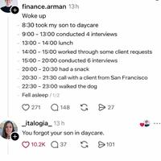

BrianFagioli writes: Little Snitch, the well known macOS tool that shows which applications are connecting to the internet, is now being developed for Linux. The developer says the project started after experimenting with Linux and realizing how strange it felt not knowing what connections the system was making. Existing tools like OpenSnitch and various command line utilities exist, but none provided the same simple experience of seeing which process is connecting where and blocking it with a click. The Linux version uses eBPF for kernel level traffic interception, with core components written in Rust and a web based interface that can even monitor remote Linux servers.
During testing on Ubuntu, the developer noticed the system was relatively quiet on the network. Over the course of a week, only nine system processes made internet connections. By comparison, macOS reportedly showed more than one hundred processes communicating externally. Applications behave similarly across platforms though. Launching Firefox immediately triggered telemetry and advertising related connections, while LibreOffice made no network connections at all during testing. The early release is meant primarily as a transparency tool to show what software is doing on the network rather than a hardened security firewall.
Read more of this story at Slashdot.
A federal appeals court denied Anthropic's bid to temporarily block the Pentagon's blacklisting, meaning the company remains shut out of Defense Department contracts while the case continues, even though a separate court has allowed other federal agencies to keep using Claude for now. CNBC reports: "In our view, the equitable balance here cuts in favor of the government," the appeals court said in its decision. "On one side is a relatively contained risk of financial harm to a single private company. On the other side is judicial management of how, and through whom, the Department of War secures vital AI technology during an active military conflict. For that reason, we deny Anthropic's motion for a stay pending review on the merits." With the split decisions by the two courts, Anthropic is excluded from DOD contracts but is able to continue working with other government agencies while litigation plays out. Defense contractors will be prohibited from using Claude in their work with the agency, but they can use it for other cases.
[...] In the ruling on Wednesday, the court acknowledged that Anthropic "will likely suffer some degree of irreparable harm absent a stay," but that the company's interests "seem primarily financial in nature." While the company claimed the DOD was standing in the way of its right to free speech, "Anthropic does not show that its speech has been chilled during the pendency of this litigation," the order said. Because of the harm Anthropic is likely to suffer, the appeals court said "substantial expedition is warranted."
An Anthropic spokesperson said in a statement after the ruling that the company is "grateful the court recognized these issues need to be resolved quickly" and that it's "confident the courts will ultimately agree that these supply chain designations were unlawful." "While this case was necessary to protect Anthropic, our customers, and our partners, our focus remains on working productively with the government to ensure all Americans benefit from safe, reliable AI," Anthropic said.
Read more of this story at Slashdot.
The FBI says (PDF) Iran-linked hackers disrupted internet-connected systems used by U.S. oil, gas, and water companies. Even with the recent two-week ceasefire between Iran and the United States and Israel, hackers backing Tehran say they won't end their retaliatory cyberattacks. The Hill reports: The report warned that similar companies across the country should be aware of an increased push by hackers to take over programmable logic controller (PLC) systems, which can be used to digitally control physical machinery from remote locations. Secure internet access for PLCs from one company, Rockwell Automation, were removed by Iran-linked coders who then "maliciously interacted with project files and altered data," according to the report. Hackers first gained access to some of the platforms in January of last year. All access to compromised platforms ended in March, the report said. The FBI said the move resulted in "operational disruption" and "financial loss."
[...] Rockwell Automation wasn't the only company to recently face cyberattacks from Iran-linked hackers. Stryker, a major U.S. medical device maker, was targeted by Iran-affiliated coders in mid-March. It was unclear if physical operations were affected by the security breach. FBI Director Kash Patel was personally impacted by hackers who leaked his emails and records related to his personal travels and business from more than 10 years ago. [...]
The FBI urged companies to adopt network defenders and multifactor authentication to prevent future attacks. Tuesday's report was published alongside the National Security Agency, the Department of Energy, and the Cybersecurity and Infrastructure Security Agency. "Government and experts have been warning about internet connected systems for years, and how vulnerable they are," one source familiar with the federal investigation into the hacks told CNN. Many companies have "ealready removed those systems and followed the guidance," the person added.
Read more of this story at Slashdot.
An anonymous reader quotes a report from the Financial Times: Iran will demand that shipping companies pay tolls in cryptocurrency for laden oil tankers passing through the Strait of Hormuz (source paywalled; alternative source), as it seeks to retain control over passage through the key waterway during the two-week ceasefire. Hamid Hosseini, a spokesperson for Iran's Oil, Gas and Petrochemical Products Exporters' Union, told the FT on Wednesday that Iran wanted to collect tolling fees from any tanker passing and to assess each ship.
"Iran needs to monitor what goes in and out of the strait to ensure these two weeks aren't used for transferring weapons," said Hosseini, whose industry association works closely with the state. "Everything can pass through, but the procedure will take time for each vessel, and Iran is not in a rush," he added. [...] Hosseini said that each tanker must email authorities about its cargo, after which Iran will inform them of the toll to be paid in digital currencies.
He said that the tariff is $1 per barrel of oil, adding that empty tankers can pass freely. "Once the email arrives and Iran completes its assessment, vessels are given a few seconds to pay in Bitcoin, ensuring they can't be traced or confiscated due to sanctions," Hosseini added.
Read more of this story at Slashdot.
Valve has released a native Steam Link beta for Apple Vision Pro, letting users stream their existing Steam games onto a large virtual screen in visionOS. It supports up to 4K resolution and will let you dynamically adjust the curve of the display. The Mac Observer reports: Steam Link does not support VR titles in this beta, and Valve clearly states that the app is limited to 2D game streaming, but this still opens up a large library of games that users can play on a massive virtual screen inside Vision Pro.
At the same time, Vision Pro already handles 2D media very well, and this update builds on that strength by turning the headset into a portable gaming display that connects directly to your existing setup without needing extra hardware.
You can join the Steam Link beta through TestFlight right now, and this early release shows how Apple Vision Pro continues to expand beyond media into more practical and everyday use cases like gaming.
Read more of this story at Slashdot.
An anonymous reader quotes a report from Ars Technica: Apple earned the lowest grades in a report on laptop and smartphone repairability released today by the consumer advocacy group Public Interest Research Group (PIRG) Education Fund. The report, which looks at how easy devices are to disassemble and how easy it is to find repairability information, gave Apple a C-minus in laptop repairability and a D-minus in cell phone repairability. For its "Failing the Fix (2026): Grading laptop and cell phone companies on the fixability of their products" report, PIRG analyzed the 10 newest laptops and phones that were available via manufacturers' French website in January. [...] Apple leads the list of laptop repairability losers, largely due to it having low disassembly scores. Apple, along with Dell and Samsung, also lost a full point for being members of TechNet and the CTA. Lenovo had the second-worst grade with a C-minus. Like Apple, Lenovo had low disassembly scores.
It also lost 0.5 points for failing to properly post PDFs explaining the French repair scores for some of its newest laptops sold in the region, as required in France. This is especially noteworthy because Lenovo got an F in last year's report for missing this information on at least 12 laptops. At the time, Lenovo director of communications David Hamilton provided a statement to Ars saying that the missing information was "due to a backend web compatibility issue that temporarily prevented the display of repairability scores on our Lenovo France website" that was "widely resolved." However, it appears that over a year later, Lenovo still isn't providing sufficient information to meet France's requirements
"While Lenovo has improved somewhat with their compliance with French consumer law by providing more repair score PDFs on their website, we urge the company to resolve this multi-year issue," this year's report says. PIRG's report concluded that "laptops are pretty stagnant in terms of repairability" across many of the eight most popular laptop brands in the US. However, Proctor noted to Ars that consumers' access to parts, tools, and information that vendors have has improved, but improvements around ease of disassembly "take longer to realize." He also praised vendors' efforts to release more repairable designs, such as Apple's MacBook Neo. For its repairability index, PIRG weighed physical ease of disassembly most heavily, while also considering the availability of repair documentation, spare parts, spare-parts affordability, and other product-specific criteria. It then adjusted company grades by deducting points for membership in trade groups that oppose right-to-repair laws and adding small bonuses for manufacturers that supported right-to-repair legislation.
Acer stood out as the only laptop vendor that avoided the 0.5-point trade-group penalty, since it was not listed as a member of TechNet or the Consumer Technology Association.
Read more of this story at Slashdot.
Bloomberg's Mark Gurman says Apple's foldable iPhone is still "on track" for a September unveiling alongside the iPhone 18 Pro lineup. 9to5Mac reports: The report notes that Apple's stock took a hit earlier today after Nikkei Asia indicated the iPhone Fold was having serious production issues. Clearly, sources within Apple were motivated to share positive news via Gurman. Not long ago, Gurman himself said that he was expecting an iPhone Fold release date that was a little bit later than iPhone 18 Pro. That's still very possible, but it sounds like Apple is internally feeling optimistic about its targeted September launch.
The report continues: "While the complexity of the new display and materials may limit initial supply for several weeks, Apple is currently operating with a plan to put the device on sale around the same time -- or very soon after -- the new non-foldable models, the people said." Gurman adds an important qualifier: "Still, the release is six months away and production has yet to ramp up. That means the timing isn't final."
Read more of this story at Slashdot.
An anonymous reader quotes a report from The Drive: Farmers have been fighting John Deere for years over the right to repair their equipment, and this week, they finally reached a landmark settlement. While the agricultural manufacturing giant pointed out in a statement that this is no admission of wrongdoing, it agreed to pay $99 million into a fund for farms and individuals who participated in a class action lawsuit. Specifically, that money is available to those involved who paid John Deere's authorized dealers for large equipment repairs from January 2018. This means that plaintiffs will recover somewhere between 26% and 53% of overcharge damages, according to one of the court documents (PDF) -- far beyond the typical amount, which lands between 5% and 15%.
The settlement also includes an agreement by Deere to provide "the digital tools required for the maintenance, diagnosis, and repair" of tractors, combines, and other machinery for 10 years. That part is crucial, as farmers previously resorted to hacking their own equipment's software just to get it up and running again. John Deere signed a memorandum of understanding in 2023 that partially addressed those concerns, providing third parties with the technology to diagnose and repair, as long as its intellectual property was safeguarded. Monday's settlement seems to represent a much stronger (and legally binding) step forward. The report notes that a judge's approval of the settlement is still required but likely to happen. John Deere also faces another lawsuit by the U.S. FTC, accusing the company of forcing farmers to use its authorized dealer network and driving up their costs for parts and repairs.
Read more of this story at Slashdot.
A New York Times investigation by John Carreyrou claims a British cryptographer named Adam Back is the strongest circumstantial candidate yet for being Satoshi Nakamoto. The report citing overlaps in writing style, ideology, technical background, and old posts that outlined key parts of Bitcoin years before its launch. Carreyrou is a renowned investigative journalist and author, best known for exposing the massive fraud at Theranos while at the Wall Street Journal. Here's an excerpt from the report: ... As anyone steeped in Bitcoin lore will tell you, Satoshi was a master at the art of maintaining anonymity on the internet, leaving few, if any, digital footprints behind. But Satoshi did leave behind a corpus of texts, including a nine-page white paper (PDF) outlining his invention and his many posts on the Bitcointalk forum, an online message board where users gathered to discuss the digital currency's software, economics and philosophy. And that corpus, it turned out, had expanded significantly during the impostor's civil trial when Martti Malmi, a Finnish programmer who collaborated with Satoshi in Bitcoin's early days, released a trove of hundreds of emails he had exchanged with him. Emails Satoshi sent to other early Bitcoin adopters had surfaced before, but none came close in volume to the Malmi dump. If Satoshi was ever going to be found, I was convinced the key lay somewhere in these texts.
Then again, others must have gone down this road before me. Journalists, academics and internet sleuths had been trying to identify Satoshi for 16 years. During that span, more than 100 names had been put forward, including those of an Irish cryptography student, an unemployed Japanese American engineer, a South African criminal mastermind and the mathematician portrayed in the movie "A Beautiful Mind." The most alluring theories had focused on coincidences that aligned with what little was known about Satoshi: a particular code-writing style, a mysterious work history, an expertise in Bitcoin's key technical concepts, an anti-government worldview. But they had run aground under the weight of an alibi or some other piece of inconsistent or contrary evidence. Each failure had been met with glee by many members of the Bitcoin community. As they liked to point out, only Satoshi could definitively prove his identity by moving some of his coins. Any evidence short of that would be circumstantial.
It seemed foolish to think that I could somehow crack a case that had confounded so many others. But I craved the thrill of a big, challenging story. So I decided to try once more to unmask Bitcoin's mysterious creator. Back, for his part, denies being Satoshi, writing in a post on X: "i'm not satoshi, but I was early in laser focus on the positive societal implications of cryptography, online privacy and electronic cash, hence my ~1992 onwards active interest in applied research on ecash, privacy tech on cypherpunks list which led to hashcash and other ideas."
Read more of this story at Slashdot.
Starting May 20th, Amazon will stop Kindle Store access for Kindle and Kindle Fire devices released in 2012 and earlier. After that date, those devices will "no longer be able to purchase, borrow, or download new content." Owners can still read content already on the device, but if an affected device is reset or deregistered after the cutoff, it can't be re-registered. The Verge reports: The complete list of affected devices goes all the way back to the original Kindle that launched in 2007 with a full keyboard and scroll wheel. [...] Amazon will be notifying affected users over email ahead of May 20th with an explanation of what their older devices can and cannot do. Pre-2012 Kindle Fire devices will be subjected to the same limitations as Kindle e-readers when it comes to books, but other apps and Amazon services on those devices won't be impacted.
For longtime users wanting to take the opportunity to upgrade to newer Kindle hardware, Amazon will offer a 20 percent discount on new Kindle devices and a $20 ebook credit that will be added to their accounts after upgrading, valid until June 20th, 2026, at 11:59PM PT. Their older purchases will be available on new devices as long as they log in to the same account they've been using for the past 14 years or more.
Read more of this story at Slashdot.
Microsoft has apparently terminated the account VeraCrypt uses to sign its Windows drivers and bootloader, leaving the encryption project unable to publish Windows updates and throwing future releases into doubt. VeraCrypt's developer says Microsoft gave no clear explanation or warning for the move. "I didn't receive any emails from Microsoft nor any prior warnings," Mounir Idrassi, VeraCrypt's developer, told 404 Media. From the report: VeraCrypt is an open-source tool for encrypting data at rest. Users can create encrypted partitions on their drives, or make individual encrypted volumes to store their files in. Like its predecessor TrueCrypt, which VeraCrypt is based on, it also lets users create a second, innocuous looking volume if they are compelled to hand over their credentials. Last week, Idrassi took to the SourceForge forums to explain why he had been absent for a few months. The most serious challenge, he wrote, "is that Microsoft terminated the account I have used for years to sign Windows drivers and the bootloader."
"Regarding VeraCrypt, I cannot publish Windows updates. Linux and macOS updates can still be done but Windows is the platform used by the majority of users and so the inability to deliver Windows releases is a major blow to the project," he continued. "Currently I'm out of options." Idrassi told 404 Media the termination happened in mid-January. "I was surprised to discover that I could no longer use my account," he said.
On the forum and in the email to 404 Media, Idrassi shared what he said was the only message he received connected to the account shutdown. "Based on the information you have provided to date, we have determined that your organization does not currently meet the requirements to pass verification. There are no appeals available, we have closed your application," it reads. Idrassi told 404 Media the message is concerning his company IDRIX. "As you can read in their message, they say that the organization (IDRIX) doesn't meet their requirements, but I don't see which requirement IDRIX suddenly stopped meeting," he said. Idrassi said he has tried contacting Microsoft support, but he received automated responses that he believes contained AI-generated text.
Read more of this story at Slashdot.
alternative_right quotes a report from the New York Post: The CIA used a futuristic new tool called "Ghost Murmur" to find and rescue the second American airman who was shot down in southern Iran, The Post has learned. The secret technology uses long-range quantum magnetometry to find the electromagnetic fingerprint of a human heartbeat and pairs the data with artificial intelligence software to isolate the signature from background noise, two sources close to the breakthrough said. It was the tool's first use in the field by the spy agency -- and was alluded to Monday afternoon by President Trump and CIA Director John Ratcliffe at a White House briefing. "It's like hearing a voice in a stadium, except the stadium is a thousand square miles of desert," a source briefed on the program told The Post. "In the right conditions, if your heart is beating, we will find you." The relatively barren landscape made for "an ideal first operational use" of Ghost Murmur, the first source noted.
"Normally this signal is so weak that it can only be measured in a hospital setting with sensors pressed nearly against the chest," the source said. "But advances in a field known as quantum magnetometry -- specifically sensors built around microscopic defects in synthetic diamonds -- have apparently made it possible to detect these signals at dramatically greater distances."
"The capability is not omniscient. It works best in remote, low-clutter environments and requires significant processing time," this person added.
Read more of this story at Slashdot.
BrianFagioli writes: Artificial intelligence has now run directly on a satellite in orbit. A spacecraft about 500km above Earth captured an image of an airport and then immediately ran an onboard AI model to detect airplanes in the photo. Instead of acting like a simple camera in space that sends raw data back to Earth for later analysis, the satellite performed the computation itself while still in orbit.
The system used an NVIDIA Jetson Orin module to run the object detection model moments after the image was taken. Traditionally, Earth observation satellites capture images and transmit large datasets to ground stations where computers process them hours later. Running AI directly on the satellite could reduce that delay dramatically, allowing spacecraft to analyze events like disasters, infrastructure changes, or aircraft activity almost immediately. "This success is a glimpse into the future of what we call Planetary Intelligence at scale," said Kiruthika Devaraj, VP of Avionics & Spacecraft Technology. "By running AI at the edge on the NVIDIA Jetson platform, we can help reduce the time between 'seeing' a change on Earth and a customer 'acting' on it, while simultaneously minimizing downlink latency and cost. This shift toward integrated AI at the edge is a technological leap that can help differentiate solutions like Planet's Global Monitoring Service (GMS), providing valuable insights for our customers and enabling rapid response times when it matters most."
Read more of this story at Slashdot.
A $500,000 "Survivor"-style corporate retreat for 120 Plex employees in Honduras "turned into a week-long disaster involving illness, wild animals, armed guards, and employees stranded on a remote island," reports the Daily Beast. The CEO was bedridden by E. coli, staff were collapsing in brutal heat during Navy SEAL-led drills, there were fire ant attacks, uncooked food, and failing utilities. At one point, a porcupine even crashed through the ceiling of a guest's room. Here's an excerpt from the report: Tech media company Plex flew its 120 employees to a Honduran resort in 2017 for what was billed as a Survivor-style getaway. They called it "Plexcon." The first harbinger of trouble was an email that arrived before the group departed, informing them that the hotel manager and chef had both quit within days of each other. Things went sharply downhill from there.
CEO Keith Valory, 54, had flown out a day early, intending to channel his inner Jeff Probst and welcome his staff off the buses like a game show host. Instead, he spent the arrival morning flat on his back. "I got E. coli, which is maybe the worst thing you could get, possibly, ever," Valory told the Wall Street Journal this week. "Just as people were arriving on the buses, I was like, 'Uh oh.' I lost 8 or 10 pounds. They had a doctor come to me, which apparently is pretty standard. They nailed an IV bag to the bedpost."
With the CEO incapacitated, chief product officer and co-founder Scott Olechowski, 52, stepped in to run proceedings -- beginning with a forced eating challenge in which one employee had to consume a dead tarantula. [...] Sean Hoff, 42, founder of Moniker Partners, the independent retreat agency that planned the trip, was running himself ragged attempting damage control -- the showers, water, and electricity kept cutting out. [...] Meanwhile, senior software engineer Rick Phillips, 53, was trying to sleep when he heard a crash in his room. He ignored it until morning. "I got up and went over to get in the shower, and there was a porcupine," he said. "It must have climbed a tree and fallen through the ceiling."
Read more of this story at Slashdot.
Meta has launched Muse Spark, its first major AI model under Alexandr Wang's leadership. The model was built over the past nine months and is being positioned as a significant step up from Llama 4. Axios reports: Muse Spark will power queries in the Meta AI app and Meta.ai website immediately, with plans to expand across Facebook, Instagram and WhatsApp. The model accepts voice, text and image inputs, but produces text-only output. [...] Meta plans to release a version of Muse Spark under an open-source license.
The model uses a fast mode for casual queries and several reasoning modes. A "shopping mode" highlights how Meta hopes to differentiate itself. It combines large language models with data on user interests and behavior. Over time, the model will also power "features that cite recommendations and content people share across Instagram, Facebook, and Threads," Meta said in a blog post. Wang, the 29-year-old entrepreneur who co-founded Scale AI, joined Meta's "superintelligence" unit last year to help Meta catch up to rival models from OpenAI and Anthropic.
Read more of this story at Slashdot.
Stephanie Palazzolo / The Information : Chapter, which uses AI to help seniors enroll in Medicare, raised a $100M Series E, doubling its valuation to $3B and bringing its total funding to $285M — Meta Platforms' Wednesday release of Spark, the first model in its broader Muse model family, doesn't blow other frontier models out of the water …
Stephen Nellis / Reuters : RISC-V chip designer SiFive raised a $400M Series G led by Atreides at a $3.65B valuation; CEO Patrick Little says it is the final funding round before an IPO — Silicon Valley startup SiFive said on Thursday it has raised a $400 million round of funding from Atreides Management, Nvidia …
Bloomberg : Elorian, which builds visual AI models with better reasoning capabilities for industries like robotics, emerges from stealth with $55M at a $300M valuation — Former Google DeepMind researcher Andrew Dai believes that the artificial intelligence models at big labs have the intelligence of a 3-year-old kid …
Zaheer Kachwala / Reuters : Google and Intel expand their partnership to deploy Intel's Xeon 6 chips and co-develop custom Infrastructure Processing Units to improve computing efficiency — Intel and Google have expanded their partnership to advance the use of artificial intelligence-focused central processing units …
Todd Bishop / GeekWire : Annual letter: Andy Jassy says AWS' AI revenue has hit a $15B annual run rate as of Q1 and that Amazon's internal chips business is generating $20B+ per year — Andy Jassy's new letter to Amazon shareholders is a data-heavy defense of the tech giant's biggest bets — from AI and custom chips …
Sri Muppidi / The Information : Documents: OpenAI expects ads to generate ~$2.4B in revenue in 2026, ~$11B in 2027, and ~$102B in 2030, or 36% of its total revenue for 2030 — OpenAI's advertising effort is so new that the company is still working out the kinks in it. That hasn't stopped it from setting ambitious aims for the business …
Thomas Ricker / The Verge : In his annual letter, Andy Jassy says Amazon's space-internet service Leo will “launch in mid-2026”, after delays; Amazon has FCC approval for 3,236 satellites — Better late than never for the Elon Musk alternative. … Amazon CEO Andy Jassy says the company's space-internet service Leo …
Dan Primack / Axios : Meta begins removing dozens of Facebook and Instagram ads from lawyers seeking clients who claim to have been harmed by social media while under the age of 18 — Meta on Thursday began removing advertisements from attorneys who were seeking clients that claim to have been harmed by social media while under the age of 18.
Sergiu Gatlan / BleepingComputer : Researchers: a zero-day vulnerability in Adobe Reader has been actively exploited since at least December 2025, and some docs contain Russian-language lures — Attackers have been exploiting a zero-day vulnerability in Adobe Reader using maliciously crafted PDF documents since at least December.
Bloomberg : Samsung plans to invest $4B to construct a chip packaging facility in Vietnam's Thai Nguyen province to support AI demand; sources say the first phase costs $2B — Samsung Electronics Co. plans a $4 billion outlay to build a chip packaging plant in northern Vietnam, as the country's largest …
Dominic Preston / The Verge : Spotify is adding toggles to stop video from playing inside the app for both music and podcasts, rolling out worldwide on all platforms and devices — Controls are rolling out worldwide to stop videos playing alongside music and podcasts. … Spotify is adding new toggles to stop …
Juro Osawa / The Information : Sources: Alibaba anonymously released AI video model HappyHorse-1.0, which ranks at the top of Artificial Analysis' AI model leaderboard, above Seedance 2.0 — Alibaba Group has anonymously released a new AI video generation model called HappyHorse-1., which rose to the top of an AI model leaderboard …
Jordan Novet / CNBC : Meta commits to spending additional $21B on AI cloud infrastructure from CoreWeave, running from 2027 to 2032, on top of its prior $14.2B deal that ends in 2031 — Meta has committed to spending an additional $21 billion on AI cloud infrastructure from CoreWeave, which comes on top …
Callie Holtermann / New York Times : A survey of 1,500 people aged 14 to 29: hopefulness regarding AI has dropped from 27% to 18% over the past year, and 50% report using GenAI daily or weekly — A new study from Gallup found that young adults have grown less hopeful and more angry about artificial intelligence.
Sam Sabin / Axios : Source: OpenAI is finalizing a model with advanced cybersecurity capabilities that it plans to release only to a small set of companies, similar to Anthropic — OpenAI is finalizing a model with advanced cybersecurity capabilities that it plans to release only to a small set of companies …